Missing-art continuation · additions review
167 new PNGs across six packs. 20 previously approved PNGs preserved byte-for-byte.
All 167 additions are owner-approved on 2026-10-14. Previously approved images keep their approval. Runtime art has not been changed. Use each full review for day/night context, background comparisons and metadata points.
Original 21-pack review and prior approvals · Exact new-file inventory
Current Claude integration handoff
The dog · A028
18 new / 2 previously approved / 20 total. Full day/night review · Checks · Sources and recipes
Owner-accepted measured visual differences: bark_paws_stationary, sleep_head_paws_stationary, wag_only_tail_changes
dog_wag / west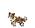
01 / 40×32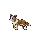
02 / 40×32 dog_walk / west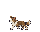
01 / 40×32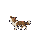
02 / 40×32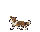
03 / 40×32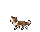
04 / 40×32 dog_bark / west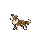
01 / 40×32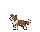
02 / 40×32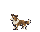
03 / 40×32 dog_sleep / west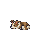
01 / 40×32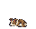
02 / 40×32 dog_run / west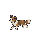
01 / 40×32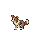
02 / 40×32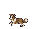
03 / 40×32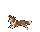
04 / 40×32 dog_bite / west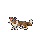
01 / 40×32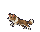
02 / 40×32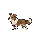
03 / 40×32 The electric fence · A042
39 new / 3 previously approved / 42 total. Full day/night review · Checks · Sources and recipes
Owner-accepted measured visual differences: electric_fence_post_span_row20
Judge copper-wire contrast and seams at night. Wire rows are 13/17; the thin span ends on row17, while the post ends on row19. This geometry difference is owner-approved.
electric_fence_post 01 / 16×32
01 / 16×32 electric_fence_horizontal01 / 16×32
electric_fence_vertical01 / 16×32
electric_fence_wreck01 / 16×32
electric_fence_post_hurt01 / 16×32
electric_fence_horizontal_hurt01 / 16×32
electric_fence_vertical_hurt electric_fence_all_masks_wholeMask 0 / 16×32Mask 1 / 16×32Mask 2 / 16×32Mask 3 / 16×32Mask 4 / 16×32Mask 5 / 16×32Mask 6 / 16×32Mask 7 / 16×32Mask 8 / 16×32Mask 9 / 16×32Mask 10 / 16×32Mask 11 / 16×32Mask 12 / 16×32Mask 13 / 16×32Mask 14 / 16×32Mask 15 / 16×32
electric_fence_all_masks_hurt Mask 0 / 16×32Mask 1 / 16×32Mask 2 / 16×32Mask 3 / 16×32Mask 4 / 16×32Mask 5 / 16×32Mask 6 / 16×32Mask 7 / 16×32Mask 8 / 16×32Mask 9 / 16×32Mask 10 / 16×32Mask 11 / 16×32Mask 12 / 16×32Mask 13 / 16×32Mask 14 / 16×32Mask 15 / 16×32
Mask 0 / 16×32Mask 1 / 16×32Mask 2 / 16×32Mask 3 / 16×32Mask 4 / 16×32Mask 5 / 16×32Mask 6 / 16×32Mask 7 / 16×32Mask 8 / 16×32Mask 9 / 16×32Mask 10 / 16×32Mask 11 / 16×32Mask 12 / 16×32Mask 13 / 16×32Mask 14 / 16×32Mask 15 / 16×32 Hardwood walls and sandbags · A043
78 new / 0 previously approved / 78 total. Full day/night review · Checks · Sources and recipes
Checks passed. Owner approval is recorded.
27 px vertical envelope follows the earlier owner decision. Horizontal source beams are cropped at the shared scale to the tile length; the hardwood lower face is cropped to the eight-pixel seam height. No pixels were repainted.
wall_2_post 01 / 16×32
01 / 16×32 wall_2_horizontal01 / 16×32
wall_2_vertical01 / 16×32
wall_2_post_hurt01 / 16×32
wall_2_horizontal_hurt01 / 16×32
wall_2_vertical_hurt01 / 16×32
wall_2_all_masks_wholeMask 0 / 16×32Mask 1 / 16×32Mask 2 / 16×32Mask 3 / 16×32Mask 4 / 16×32Mask 5 / 16×32Mask 6 / 16×32Mask 7 / 16×32Mask 8 / 16×32Mask 9 / 16×32Mask 10 / 16×32Mask 11 / 16×32Mask 12 / 16×32Mask 13 / 16×32Mask 14 / 16×32Mask 15 / 16×32
wall_2_all_masks_hurt Mask 0 / 16×32Mask 1 / 16×32Mask 2 / 16×32Mask 3 / 16×32Mask 4 / 16×32Mask 5 / 16×32Mask 6 / 16×32Mask 7 / 16×32Mask 8 / 16×32Mask 9 / 16×32Mask 10 / 16×32Mask 11 / 16×32Mask 12 / 16×32Mask 13 / 16×32Mask 14 / 16×32Mask 15 / 16×32
Mask 0 / 16×32Mask 1 / 16×32Mask 2 / 16×32Mask 3 / 16×32Mask 4 / 16×32Mask 5 / 16×32Mask 6 / 16×32Mask 7 / 16×32Mask 8 / 16×32Mask 9 / 16×32Mask 10 / 16×32Mask 11 / 16×32Mask 12 / 16×32Mask 13 / 16×32Mask 14 / 16×32Mask 15 / 16×32 sandbag_wall_post01 / 16×32
sandbag_wall_horizontal01 / 16×32
sandbag_wall_vertical01 / 16×32
sandbag_wall_wreck01 / 16×32
sandbag_wall_post_hurt01 / 16×32
sandbag_wall_horizontal_hurt01 / 16×32
sandbag_wall_vertical_hurt01 / 16×32
sandbag_wall_all_masks_whole Mask 0 / 16×32Mask 1 / 16×32Mask 2 / 16×32Mask 3 / 16×32Mask 4 / 16×32Mask 5 / 16×32
Mask 0 / 16×32Mask 1 / 16×32Mask 2 / 16×32Mask 3 / 16×32Mask 4 / 16×32Mask 5 / 16×32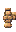
Mask 6 / 16×32Mask 7 / 16×32Mask 8 / 16×32Mask 9 / 16×32Mask 10 / 16×32Mask 11 / 16×32Mask 12 / 16×32Mask 13 / 16×32Mask 14 / 16×32Mask 15 / 16×32 sandbag_wall_all_masks_hurt Mask 0 / 16×32Mask 1 / 16×32Mask 2 / 16×32Mask 3 / 16×32
Mask 0 / 16×32Mask 1 / 16×32Mask 2 / 16×32Mask 3 / 16×32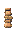
Mask 4 / 16×32Mask 5 / 16×32Mask 6 / 16×32Mask 7 / 16×32Mask 8 / 16×32Mask 9 / 16×32Mask 10 / 16×32Mask 11 / 16×32Mask 12 / 16×32Mask 13 / 16×32Mask 14 / 16×32Mask 15 / 16×32 Power icons and the new weapons' icons · A045
22 new / 0 previously approved / 22 total. Full day/night review · Checks · Sources and recipes
Checks passed. Owner approval is recorded.
icon_emergency_repair01 / 16×16
hud_emergency_repair01 / 10×10
icon_garlic_braid01 / 16×16
hud_garlic_braid01 / 10×10
icon_searchlight01 / 16×16
hud_searchlight01 / 10×10
icon_electric_fence01 / 16×16
hud_electric_fence01 / 10×10
icon_sandbag_wall01 / 16×16
hud_sandbag_wall01 / 10×10
The Winter Lord · A054
8 new / 14 previously approved / 22 total. Full day/night review · Checks · Sources and recipes
Checks passed. Owner approval is recorded.
winter_lord_walk / west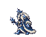
01 / 80×64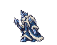
02 / 80×64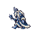
03 / 80×64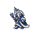
04 / 80×64 winter_lord_cast / west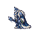
01 / 80×64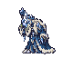
02 / 80×64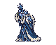
03 / 80×64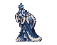
04 / 80×64